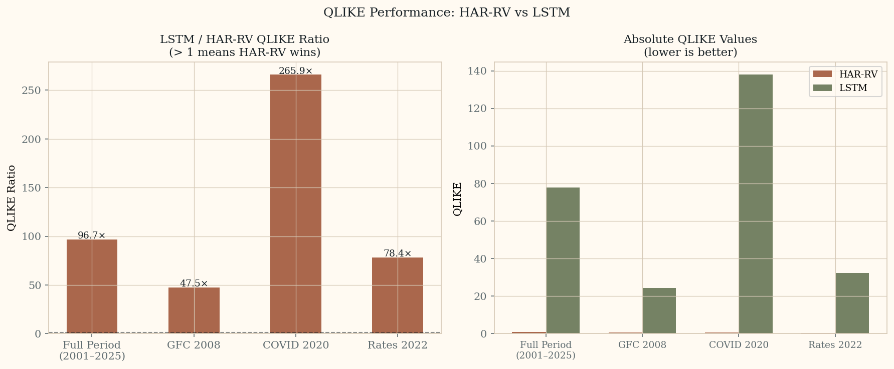
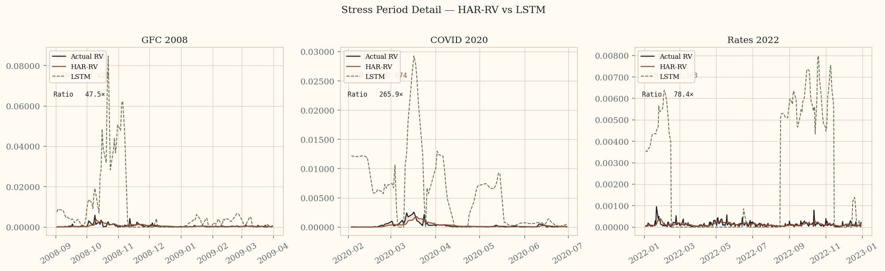

Project Phoenix · RVH Track
Rough Volatility as ML Benchmark
Two papers on why domain expertise — not ML capability — is the binding constraint
in rough volatility forecasting and semiconductor yield prediction. The naive pipeline
fails structurally at every layer. The failures are predictable, diagnosable, and
invisible to a practitioner who does not know the process.
The two papers
Design Principle and Concrete Domain
Paper 1.8 — Cross-Domain Benchmark Principle
Rough volatility as a reusable benchmark design criterion
Both realized volatility forecasting (empirical, H ≈ 0.1) and semiconductor
defectivity simulation (H = 0.1 by design) reward domain expertise at every
pipeline layer. Partial corrections produce plausible-looking but still
systematically wrong results — making shallow domain expertise detectable.
The 7.1% instability loss in the fab simulation is visible only through path
modeling; the static average erases it.
Four conditions. Two domains. One benchmark design principle.
Paper 1.9 — Concrete ML Evaluation Domain
Realized volatility forecasting as the financial benchmark
The generative process — fractional Brownian motion, H ≈ 0.1, validated across
thousands of assets — is structurally incompatible with every standard ML
architecture. LSTMs, Transformers, and AR models carry Markovian inductive
biases that conflict with rough volatility. The mismatch is not tunable; it is
architectural. HAR-RV is the expert floor, not the ceiling. An evaluator's job
is to determine whether a practitioner knows to start there — and why.
Know the process before fitting any model. That is the bar.
What rough volatility is
H ≈ 0.1 — Rougher Than Brownian Motion
The Process
Fractional Brownian Motion
Realized volatility behaves like a fractional Brownian motion with Hurst
exponent H ≈ 0.1 — empirically validated across thousands of assets by
Gatheral, Jaisson, and Rosenbaum (2018). H < 0.5 means anti-persistent
increments: positive moves are more likely to reverse than continue.
At H = 0.1 the paths are substantially rougher than standard diffusions.
The Consequence
Clustering and Anti-Persistence Together
Volatility clusters at high levels — when it rains, it pours — while
increments remain anti-persistent. This two-layer structure is what makes
finite-context architectures structurally misspecified.
Adding depth or attention heads does not fix a Markovian bias.
Four pipeline layers
Where The Naive ML Pipeline Fails
Layer 1
Feature Engineering
Default (wrong): raw daily returns.
Domain-correct: log-realized variance at 5-minute, 1-hour, and daily frequencies plus bipower variation.
Raw daily returns have near-zero autocorrelation — the signal has already decayed.
A model ingesting raw returns is fitting noise. This is not a hyperparameter
problem; it requires knowing what the relevant process signal is.
Layer 2
Architecture Selection
Default (wrong): LSTM, Transformer, AR.
Domain-correct: HAR-RV, rough fractional kernel, neural-SDE.
Standard architectures carry Markovian inductive biases that cannot represent
fBm long-memory structure. The mismatch is architectural, not a scale problem.
Deeper LSTMs do not resolve it.
Layer 3
Validation Protocol
Default (wrong): k-fold cross-validation.
Domain-correct: expanding-window walk-forward with 252-day burn-in.
K-fold on a long-memory series allows future path information to contaminate
training. In-sample metrics look strong; out-of-sample performance collapses
during volatility regime shifts — exactly when the model is needed most.
Layer 4
Evaluation Metric
Default (wrong): MSE.
Domain-correct: QLIKE.
MSE over-penalizes large absolute errors without normalizing by the current
volatility level. QLIKE weights proportional errors and is the standard
criterion for volatility model comparison (Patton, 2011). A model optimized
on MSE is systematically miscalibrated during high-volatility regimes.
The interaction structure
Corrections Are Jointly Necessary
Three out of four is not enough
Wrong features mask architecture failure in-sample — the model overfits noise
with sufficient capacity. Wrong validation masks both. Wrong loss hides
miscalibration until an out-of-sample volatility spike. A practitioner who
corrects any three but not the fourth still produces a systematically
miscalibrated result.
Shallow knowledge is detectable
A practitioner who knows two of the four corrections will be confidently wrong
in specific, diagnosable ways that a domain expert can predict before seeing
the model output. This is what makes the domain high-signal benchmark territory:
partial expertise produces confident wrong answers, not noisier correct ones.
The expert floor
HAR-RV Is Not A Simplification
Model
HAR-RV (Corsi, 2009)
A linear heterogeneous autoregression on daily, weekly, and monthly realized
variance components. No hidden layers. No attention. Interpretable: each
coefficient maps directly to the multi-scale persistence structure of the
process. Hard to beat at standard evaluation horizons.
Why It Matters
It Is A Statement About The Process
HAR-RV encodes the heterogeneous structure of rough volatility directly.
A practitioner who knows this domain knows to start here. A practitioner
who does not will likely never produce HAR-RV through search — the standard
ML instinct is to add complexity, not to remove it.
Empirical evidence — Paper 1.9
HAR-RV vs LSTM: Walk-Forward Results (S&P 500, 2001–2025)
Walk-forward validation on 6,264 out-of-sample predictions. Expanding window,
252-day burn-in. HAR-RV uses OLS on daily, weekly, and monthly realized variance
components. LSTM trained on the same features with MSE loss — intentionally the
wrong loss function, as the paper describes.
Full Period QLIKE Ratio
96.7×
LSTM / HAR-RV over 2001–2025. HAR-RV wins across all 6,264 predictions.
COVID 2020 QLIKE Ratio
265.9×
LSTM degrades worst precisely during the highest-stress period — when the model is needed most.

Left: LSTM/HAR-RV QLIKE ratio by period — values above 1 mean HAR-RV wins.
Right: absolute QLIKE values — HAR-RV stays near zero across all periods while LSTM spikes at every stress event.

Stress period detail. HAR-RV (red) tracks actual RV (black) closely in all three periods.
LSTM (green dashed) overshoots dramatically — particularly during COVID 2020 where it reaches
137.87 QLIKE vs HAR-RV's 0.518.
Cross-domain comparison
Two Domains, One Benchmark Property
Financial (empirical)
fBm, H ≈ 0.1, validated across thousands of assets. Default pipeline misses clustering through Markovian bias.
Semiconductor (modelled)
fBm, H = 0.1, design choice. Static D₀ average erases 7.1% instability loss visible only through path modeling.
Shared Failure
Naive pipeline produces plausible in-sample results that miss operationally significant behavior at regime shifts.
Shared Correction
Domain-informed structure owns the modeling correctness. The ML pipeline sits on top of it — it does not replace it.
Expert Bar
Know which pipeline choices are wrong for this process — and why — before fitting any model.
Four benchmark conditions
What Makes A Domain High-Signal For Testing Expertise
Condition 1
Structural Failures
Pipeline failures are correctable only by changing the modeling approach — not by tuning hyperparameters.
Condition 2
Process Knowledge Required
The correct approach at each layer requires understanding the process, not just fitting the data.
Condition 3
Pre-Fit Diagnosability
A domain expert can identify which pipeline choices are mismatched before fitting any model.
Condition 4
Partial Knowledge Is Detectable
Partial corrections produce plausible-looking but still systematically wrong results. Shallow domain expertise is visible.
One-line thesis
What These Papers Are Actually Saying
Domain expertise is testable. A practitioner who knows rough volatility can specify
the correct pipeline before seeing the data — because they understand the process.
One who does not will be confidently wrong in ways a domain expert can predict in advance.
Related work
Companion Site
The semiconductor simulation that motivated the cross-domain principle is documented at
Fab Simulation & RVH — Paper 1.4.